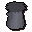
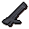
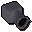
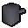

Multi cannon parts for sale:
Inventory config
mcannonshopRun by  Nulodion. Open in knowledge graph →
Nulodion. Open in knowledge graph →
Located in: Dwarven Mine
Stock
| Item | Stock | Value | Sells for |
|---|---|---|---|
 Cannon base | 5 | 187500 gp | 200625 gp |
 Cannon stand | 5 | 187500 gp | 200625 gp |
 Cannon barrels | 5 | 187500 gp | 200625 gp |
 Cannon furnace | 5 | 187500 gp | 200625 gp |
| Instruction manual | 5 | 10 gp | 10 gp |
| 5 | 5 gp | 5 gp |
Shop sells at 107.0% of item value and buys at 40.0%.